The lattice package (Sarkar, 2008) improves on base R graphics by providing better defaults and the ability to easily display multivariate relationships. In particular, the package supports the creation of trellis graphs - graphs that display a variable or the relationship between variables, conditioned on one or more other variables. Lattice methods (e.g. xyplot(), bwplot(), dotplot()) are available for FLR classes in FLCore, and the standard plots (plot()) in FLR are lattice-based.
To follow this tutorial you should have installed the following packages:
You can do so as follows:
install.packages(c("lattice"))
install.packages(c("FLCore"), repos="http://flr-project.org/R")Load necessary packages:
library(FLCore)
library(lattice)The typical formula for lattice plots is graphtype(formula, data=FLQuant)
where graphtype is selected from the list below. Formula specifies the variable(s) to display and any conditioning variables. For example ~ data | A means display numeric variable for each level of factor A in separate graphs. data ~ A means display numeric variables for each level of factor A.
The following lattice graph options could be used for FLR objects:
| Graph Type | Description | Formula |
|---|---|---|
| barchart | bar plot | data ~ A |
| bwplot | boxplot | data ~ A |
| dotplot | dotplot | data ~ A |
| histogram | histogram | ~ data | A |
| xyplot | scatterplot | data ~ A or data ~ A | B |
| wireframe | 3D wireframe graph | data ~ A + B |
| bubbles | bubble plot | A ~ B |
In case of lattice-based plot the name of the object can be simply used, e.g. plot(ple4)
The standard plot() function in FLR returns lattice-based plots for FLR objects.
In the following examples, the FLStock object ple4 and the FLSR object nsher are used.
#Read FLR examples
data(ple4)
data(nsher)Plots of the main FLQuants of an FLStock can be generated using the plot() function
# Plot FLStock
plot(ple4)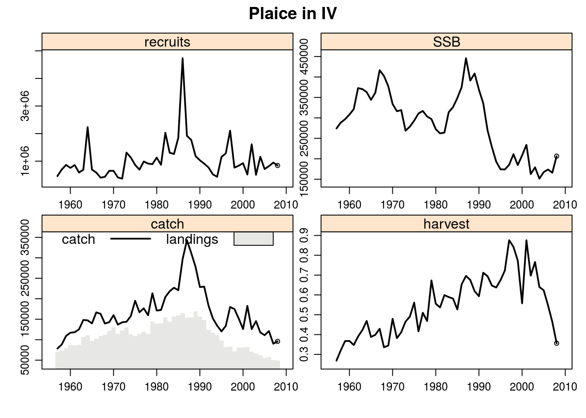
A specific object (FLQuant) of the FLStock can be also plotted by age and year using the plot() function. In the following example, the scales argument has been used to allow different scales on the y axis of each age’s plot.
# plot FLQuant
plot(catch.n(ple4)/1000, ylab="Catch numbers (thousands)",
scales = list(y = list(relation = 'free')))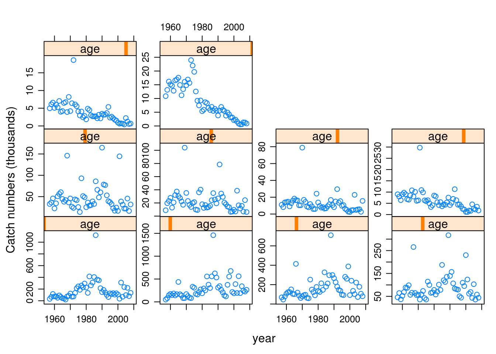
The plot() function can be also used to produce summary graphs of objects other then FLStock, such as FLSR objects.
# Plot FLSR
plot(nsher)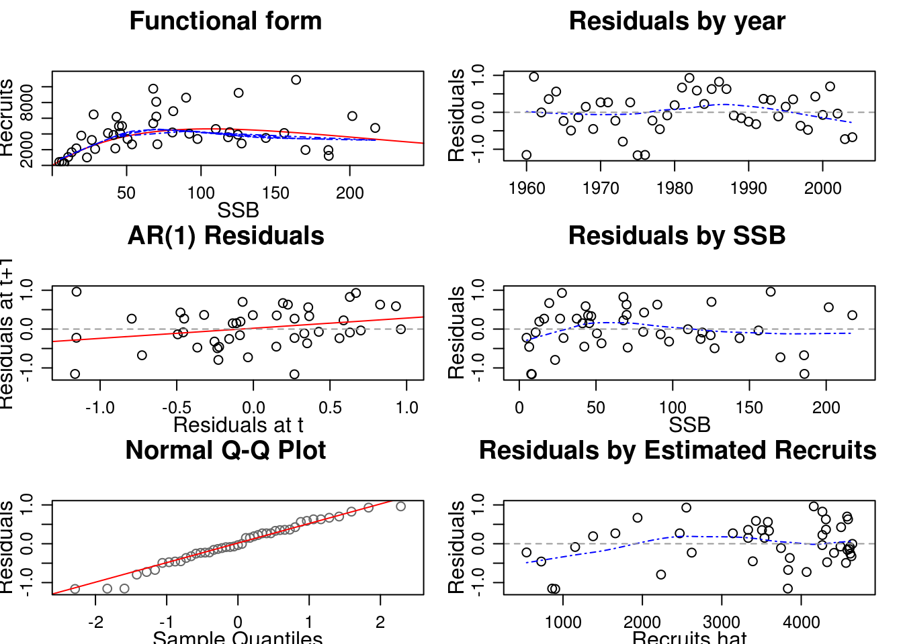
To plot FLR objects with lattice a conversion to data.frame is required to select columns names for dims and FLR objects (‘data’) to plot. It is usefull to check how the objects look like before plotting it.
head(as.data.frame(catch(ple4)))| age | year | unit | season | area | iter | data |
|---|---|---|---|---|---|---|
| all | 1957 | unique | all | unique | 1 | 78423 |
| all | 1958 | unique | all | unique | 1 | 88240 |
| all | 1959 | unique | all | unique | 1 | 109238 |
| all | 1960 | unique | all | unique | 1 | 117138 |
| all | 1961 | unique | all | unique | 1 | 118331 |
| all | 1962 | unique | all | unique | 1 | 125272 |
xyplot produces bivariate scatterplots or time-series plots for FLR objects. Standard features, e.g. division by number could be used in order to update standard FLR units of measurement if needed.
Use lattice options from user guide to update your graphs.
xyplot(data/1000~year, data=catch(ple4), type='b', pch=19,
ylab="catch (thousand tonnes)",xlab='')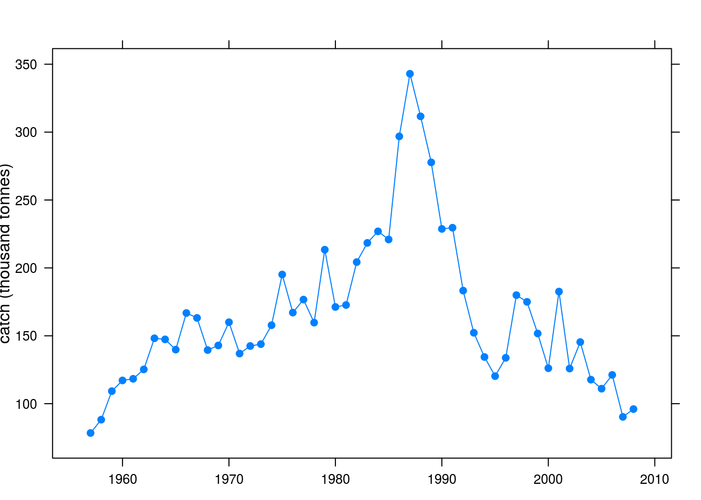
One could also group the data, e.g. by age/area or season and plot the FLQuant by age class, area or season.
xyplot(data/1000~year, groups=age, data=catch.n(ple4), type='l',
auto.key=list(space='bottom',columns=5, cex=0.7),
ylab='Catch numbers at age (10^6)',xlab='')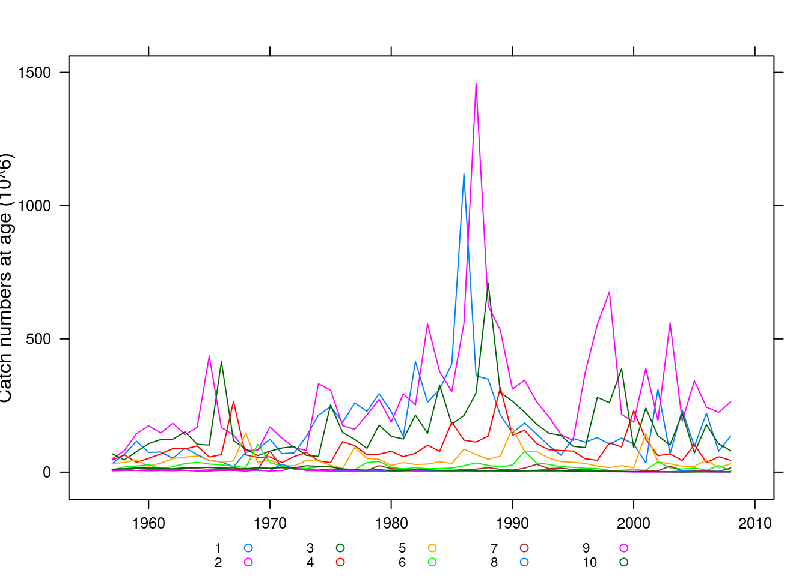
Or analyse the groups by plotting them separately
xyplot(data/1000~year|factor(age), data=catch.n(ple4), type='l',
scales = list(y = list(relation = 'free')), ylab='Catch numbers (10^6)',xlab='')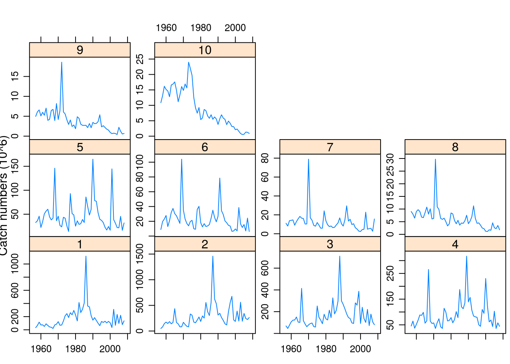
Methods are also available for plotting multiple FLQuants called by name using ‘qname’
xyplot(data~year|qname, data=FLQuants(SSB=ssb(ple4), Yield=catch(ple4), Landings=landings(ple4)),xlab='',
type='l')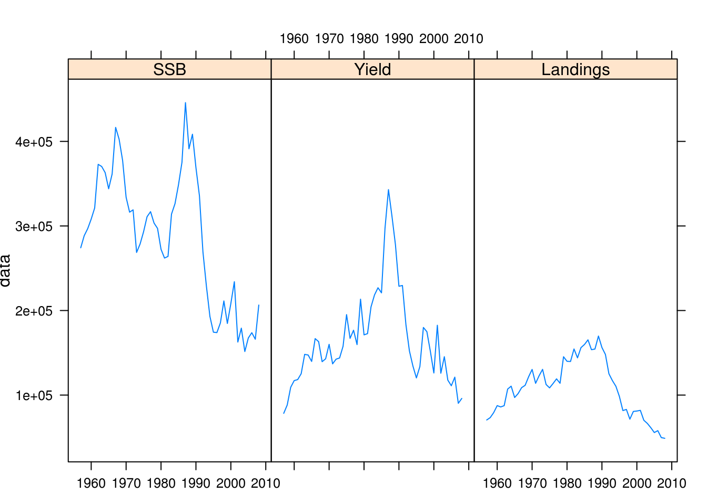
Similarly to the xyplots, barcharts also allow exploring FLQuants
barchart(data/1000~factor(year),
data=landings(ple4),
ylab =list(label="thousand tonnes",cex=0.8),scales=list(x=list(rot=90)),
type="v", main = "Total landings"
)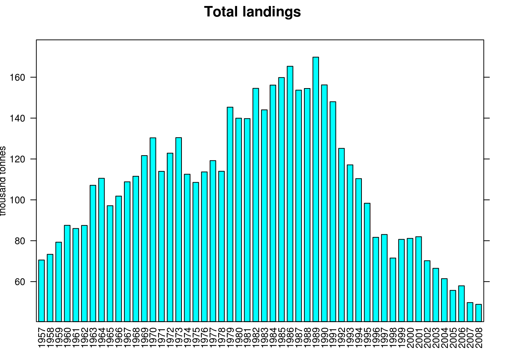
Boxplots can be created using bwplot(). In the following example some stochasticity has been added to Fbar and the resulting values per year have been plotted as boxplots.
bwplot(data~year, rlnorm(200, fbar(ple4), 0.15),scales=list(x=list(rot=90)), ylab="Fbar")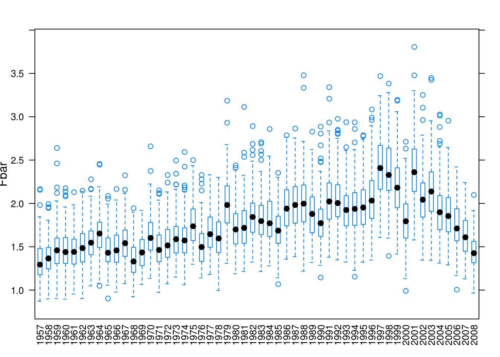
Dotplots can be used to plot FLQuants. In the following example, F at age is plotted for the available time-series and colours are used to indicate the different age classes.
dotplot(data~year,groups=age,harvest(ple4),
scales=list(x=list(rot=90)), auto.key=list(space='bottom',columns=5, cex=0.7),ylab="F at age")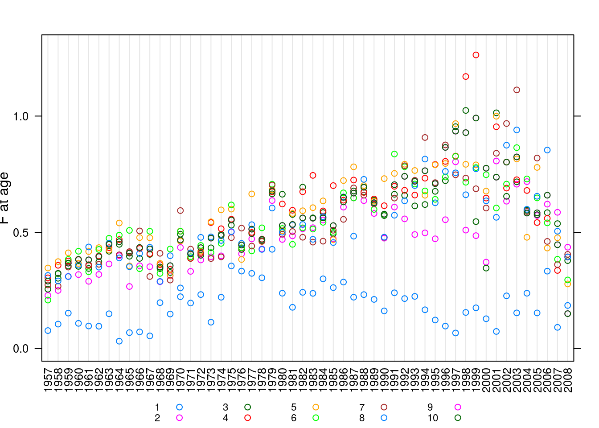
Histograms can be implemented to show what percent of total entries of an FLQuant falls within a specific range of values. The following example shows how younger age classes exhibit greater variability in terms of catch numbers compared to older age classes, as they are affected more from the size of incoming cohorts.
histogram(~data|age, catch.n(ple4), xlab='Catch numbers')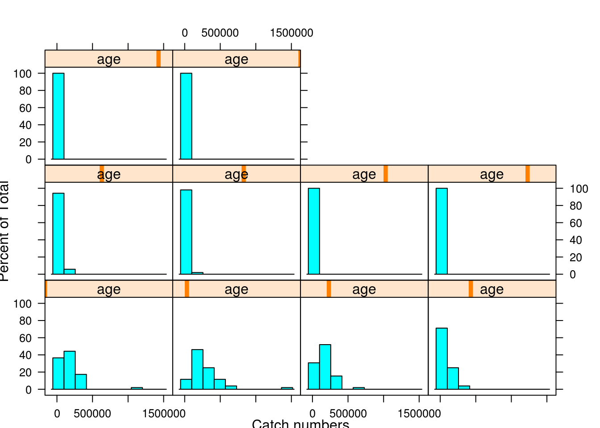
Three-dimensional surface plots can also be used for for plotting FLQuants. In the following example F at age by year is plotted as a three dimensional surface.
wireframe(data~age+year, data=harvest(ple4),zlab="F",drape = TRUE,
col.regions = colorRampPalette(c("green", "red"))(100))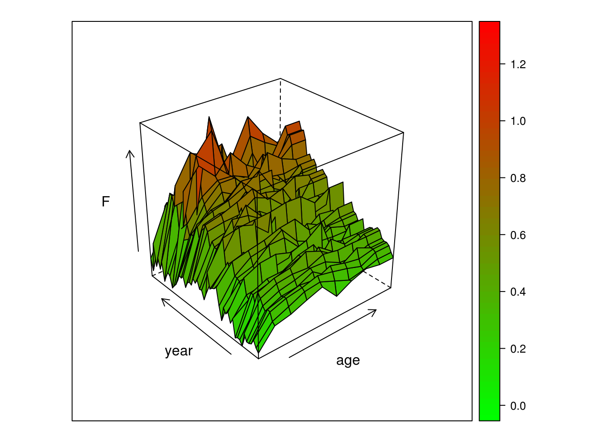
The bubble plots have been created specifically for FLR and they are typically used to visualise data by age classes.
bubbles(age~year, data=catch.n(ple4), xlab='', bub.scale=5)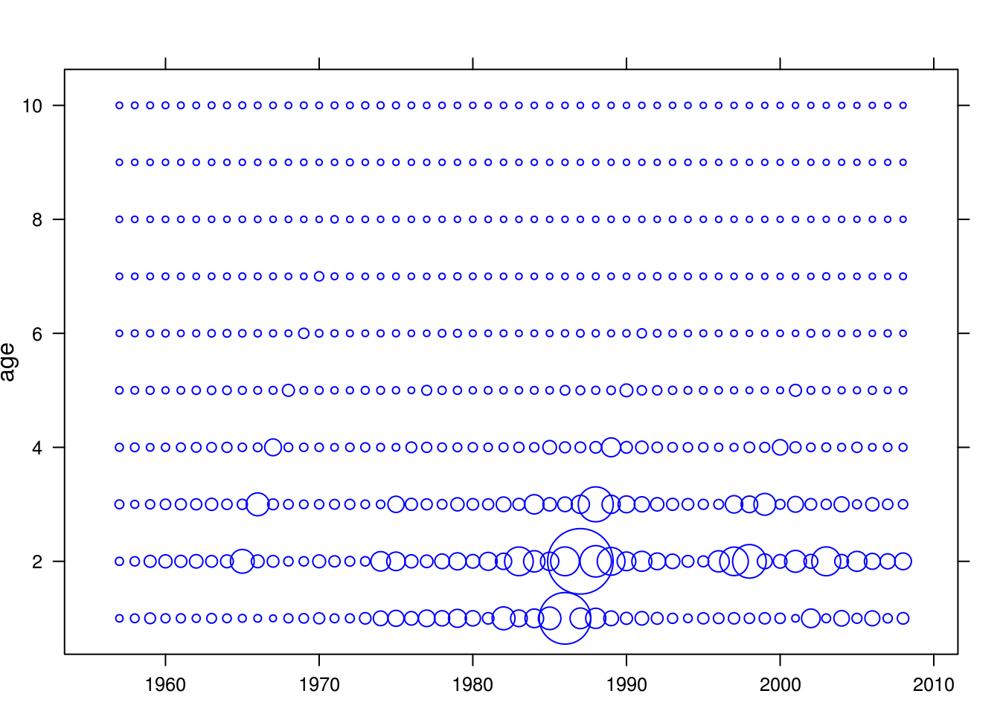
One could also specify parts of the object of interest, e.g. select age classes between 5 and 10 as following:
bubbles(age~year, data=catch.n(ple4)[5:10,], xlab='', bub.scale=10)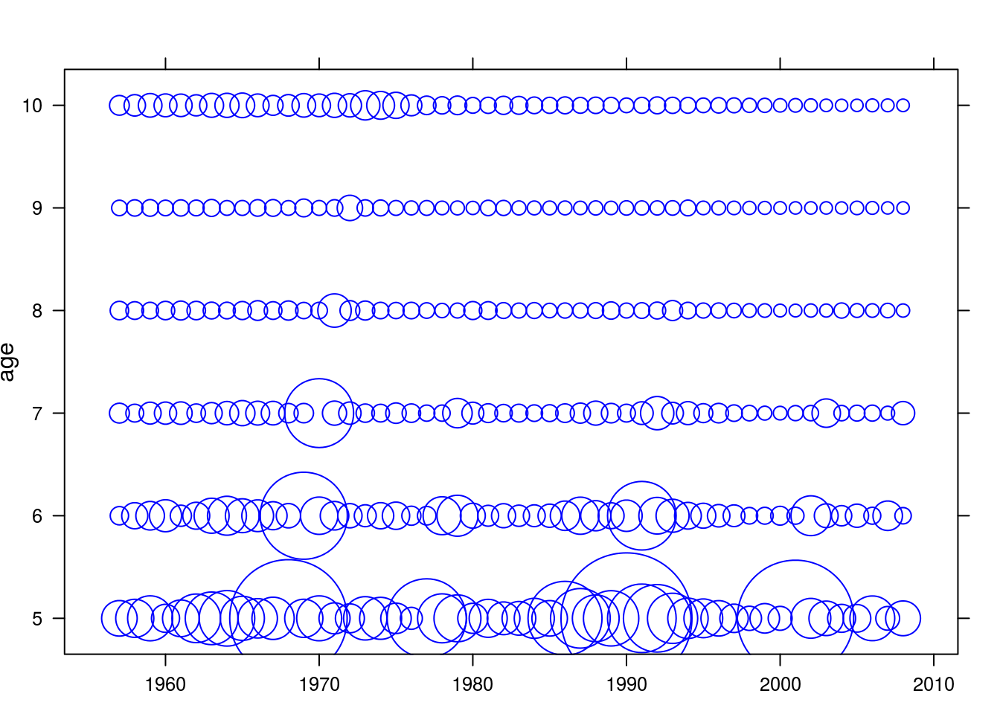
This document is licensed under the Creative Commons Attribution-ShareAlike 4.0 International license.